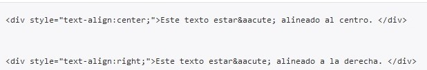
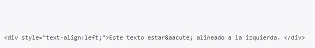
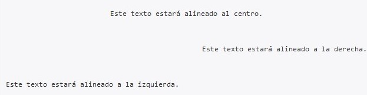

Gracias al siguiente estilo podemos alinear el texto a la izquierda (left), a la derecha (right), al centro (center) o justificarlo (justify). Vamos a ver el código de tres párrafos: uno alineado al centro, otro a la izquierda y otra a la derecha.

El resultado esperado
